World of Warcraft
Two decades. Countless expansions. Still the titan of the MMORPG genre.
Review
World of Warcraft is the most successful MMORPG ever made and one of the most culturally significant games in history. Launching in 2004 to 12 million concurrent subscribers at its peak, it defined what massively multiplayer gaming could be for an entire generation. Today, it hosts both the ongoing retail version — currently in the Worldsoul Saga storyline — and Classic servers that preserve the original 2004 experience for those who want it.
Modern WoW is rich with content: mythic+ dungeons offering infinitely scaling difficulty, a world raid structure with some of the most mechanically demanding encounters in gaming, transmog systems for cosmetic customization, pet battles, professions, housing through the Warband system, and a narrative that spans two decades of lore across the continents of Azeroth and beyond. The Dragonflight and The War Within expansions received strong critical reception, widely seen as a creative renaissance for the game.
Classic WoW is an entirely different proposition — a slower, more social, community-driven experience where the journey to level cap is the game, reputation and social bonds matter enormously, and the sense of a world that doesn't cater to you creates a kind of immersion that modern MMOs have largely abandoned. Whether you play retail, Classic Era, or Season of Discovery, WoW remains the dominant force in its genre for very good reasons.
Strengths and Limits
- 20+ years of content — unmatched breadth of things to do
- Mythic+ and raid design consistently produces the genre's hardest PvE encounters
- Both retail and Classic modes offer entirely different but excellent experiences
- Community remains active and enormous across multiple server types
- Storytelling in The War Within shows strong narrative focus
- Cross-faction play has made social and content finding significantly better
- Monthly subscription model on top of expansion purchase cost
- New player experience is overwhelming given 20 years of systems
- Some retail content cadence can feel like a treadmill
- Blizzard's corporate reputation has been damaged by workplace controversies
Reader Fit
This review is written around fit: who should play it, what kind of session it rewards, and what friction might make it wrong for another reader. A high grade does not mean every player should buy it immediately. It means the game has a clear identity, a strong reason to exist, and enough craft to justify attention from the right audience.